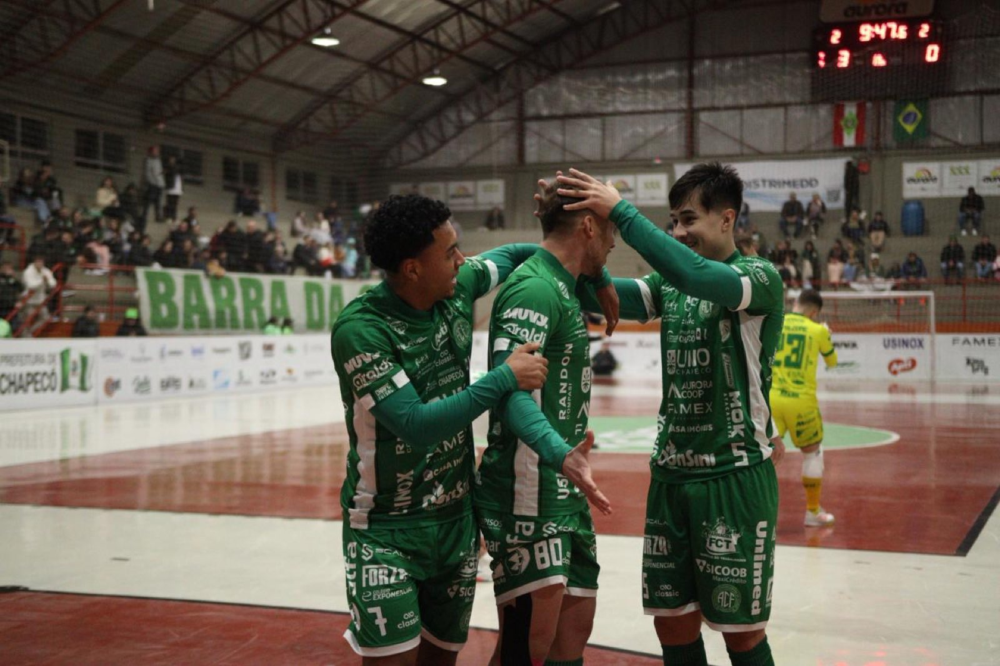
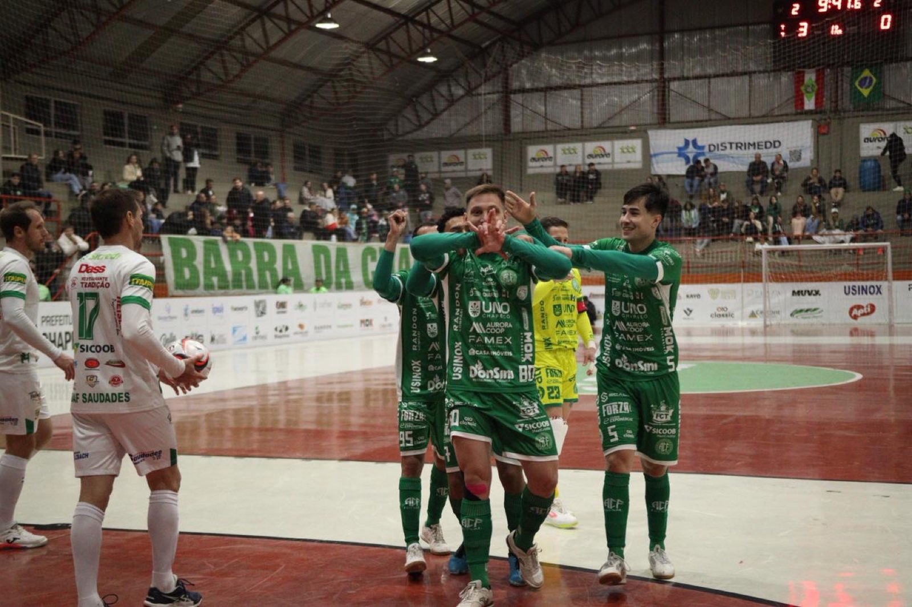

Vitória e liderança. A Prefeitura de Chapecó/Chapecoense/Unochapecó ganhou da ADAF/Saudades por 5 a 2, na noite desta terça-feira (23), pela sexta rodada da Copa Santa Catarina de Futsal. O resultado construído no Ginásio Plínio Arlindo De Nes (SER Aurora), em Chapecó, coloca o Verdão das Quadras em primeiro lugar do grupo A.

A torcida verde-branca encarou o frio de 6º C para apoiar o time e não se arrependeu. Logo aos 3'17", o público foi premiado com um gol dos donos da casa, marcado por Fael. Os anfitriões dominavam o duelo e ampliaram a diferença em chute magistral do goleiro Ale Falcone, aos 8'21". O terceiro não demorou: aois 10'13", Hulk balançou as redes. Ainda na primeira etapa, Théu diminuiu para os visitantes, aos 16'45.
A Chape Futsal queria aumentar a vantagem no segundo tempo. Conseguiu. Aos 7'53", Théu fez um gol contra, o quarto dos donos da casa. O quinto saiu aos 13'33" por meio de Kassula, que alcançou a marca de 10 gols na temporada, mantendo-se como artilheiro do time em 2026. A ADAF/Saudades anotou o seu segundo tento aos 15'32", com Roger. Final: 5 a 2.

O Verdão das Quadras foi a 9 pontos em 4 jogos e está sozinho no topo da chave A. O próximo compromisso da Chapecoense será neste sábado (27), às 17h, contra a Apaff/Florianópolis, em confronto atrasado da segunda rodada. O duelo ocorrerá novamente no Ginasio Plínio De Nes (SER Aurora), em Chapecó.
Crédito das fotos: @rogersilva_fotografia/@achapefutsal